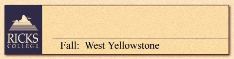

| Sept. 13-19, 1998 | Sept. 20-26, 1998 |
| September 13-19, 1998 - $355 | Top Back |
| THE PLUMBING OF
A GEYSER: GEOLOGY IN YELLOWSTONE PARK
Study and observe the formation of geysers (including Old Faithful), fumaroles, hot springs, and mud pots, within Yellowstone, a setting that surpasses all the world’s other geothermal areas in sheer number of spouting displays. IN THE BEGINNING: EARLY HISTORY OF YELLOWSTONE
PARK
TEN YEARS LATER - THE 1988 YELLOWSTONE FIRES
|
|
| September 20-26, 1998 - $355 | Top Back |
| THE PLUMBING OF
A GEYSER: GEOLOGY IN YELLOWSTONE PARK
Study and observe the formation of geysers (including Old Faithful), fumaroles, hot springs, and mud pots, within Yellowstone, a setting that surpasses all the world’s other geothermal areas in sheer number of spouting displays. IN THE BEGINNING: EARLY HISTORY OF YELLOWSTONE
PARK
CAUGHT IN THE MIDDLE: WILD ANIMALS IN YELLOWSTONE
PARK
|
|